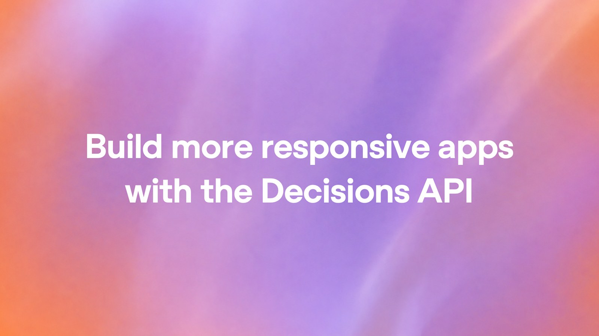
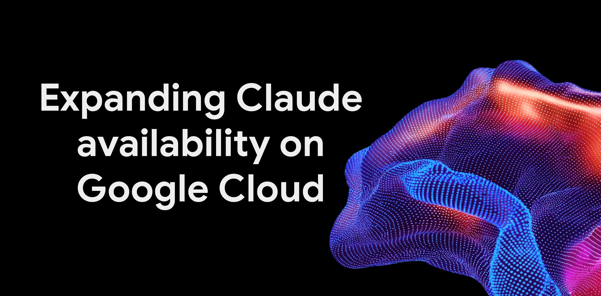
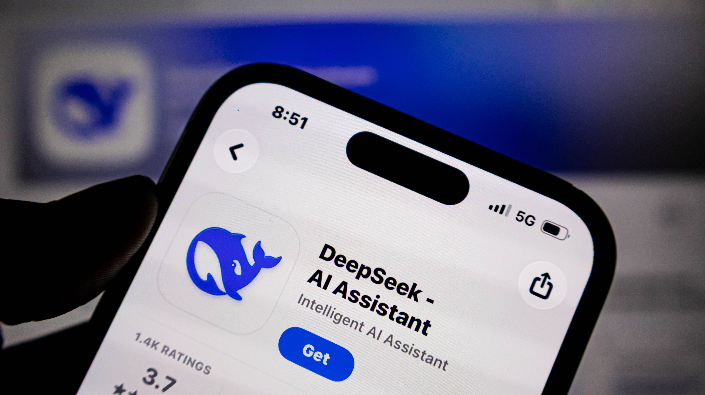
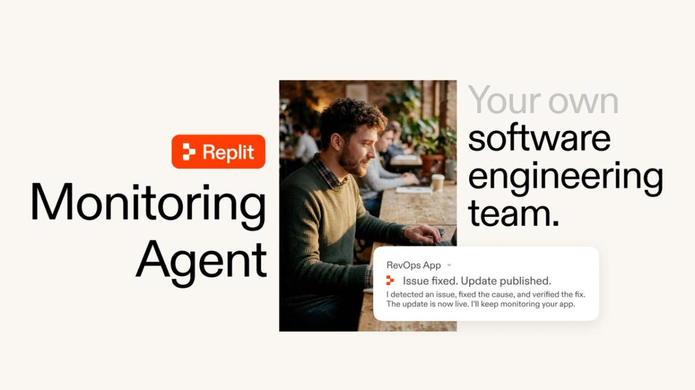
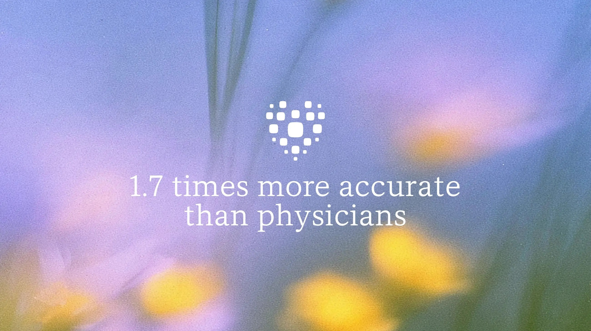

01平台 头条
OpenAI Decisions API 正式 GA：有界小决策，比 Responses 上 Luna 最多快 10×
10-23 03:07 北京时间开发者平台主线 · AIHOT 日报头条独立来源 3 家

OpenAI Decisions API 社交图（来源：openai.com / OG）
介绍
北京时间 10-23 03:07，@OpenAIDevs 宣布 Decisions API 全面可用（GA）。面向分类、路由、评分等答案有界的问题：对文本 / 图像 / JSON 返回 predicate 概率、choice 选项或 score 标尺，而不是生成完整回复。官方称相对经 Responses API 调用 GPT-6 Luna，延迟最多可低约 10×；模型目前仅支持 gpt-6-luna。自公开测试版起新增原生 GPT-Live 集成、提示缓存、美/欧推理驻留、每请求最多 400 问（测试版 200）。定价：未缓存输入 $0.10 / 百万 token，缓存命中折扣，不收 output token 费。
为什么重要
Agent 与业务流水线里大量「该走哪条分支」的小决策，堆起来才是延迟与账单。把决策从完整生成里拆开，是今年平台层最实用的一刀。
要点
- 能力：predicate / choice / score；JSON 输入、问题级图像、会话历史与工具输出作证据
- 速度与价：相对 Responses+Luna 最多约 10×；$0.10/1M 未缓存输入，无 output 费
- 落地客户引述（官博）：Box / Datadog / Ramp / Sierra / Speak 等给出延迟或成本改善案例
- 交叉：@OpenAIDevs 原推 + openai.com 官博 + Developers Docs + AIHOT
02标准
Anthropic 把 Agent Skills 捐给 AAIF：与 MCP 同属 Linux 基金会中立家
10-23 01:55 北京时间互操作标准 · ClaudeDevs 官帖独立来源 3 家

Anthropic Agent Skills 捐赠文配图（来源：anthropic.com）
介绍
北京时间 10-23 01:55，@ClaudeDevs 宣布：将 Agent Skills 开放标准捐赠给 Linux Foundation 旗下 Agentic AI Foundation（AAIF）——与此前捐赠的 MCP 同属该基金会。官博称自 2025-12 公布标准以来，已有 70+ 智能体平台接入（含 ChatGPT、Cursor、GitHub Copilot、VS Code）；累计约 100 万 skills 发布、近 2.8 亿 次安装。捐赠范围含名称与 logo、GitHub 组织与 agentskills.io 域名；维护者含 Anthropic / Google / OpenAI 等公司工程师以个人身份参与。
为什么重要
Skill 文件夹（SKILL.md + 脚本/资料）正在变成跨厂商的「SOP 打包格式」。中立托管后，一次写成的技能不再锁死在某一实验室运行时。
要点
- 规格：技能=含 SKILL.md 的文件夹 + 可选脚本与参考材料
- 采用面：70+ 平台；约 100 万 skills / 近 2.8 亿安装（官博数字）
- 治理：AAIF 中立托管；Lead Maintainers David Soria Parra、Mahesh Murag
- 交叉：@ClaudeDevs + anthropic.com + AIHOT；@bcherny 旁证
03产品
Claude 网页/桌面/移动：下周起 Pro·Max·Team 会话默认 auto mode
10-23 04:04 北京时间权限默认值变更 · 高互动官帖独立来源 3 家
Claude auto mode 官博社交图（来源：claude.com）
介绍
北京时间 10-23 04:04，@claudeai 宣布：从下周起，Pro / Max / Team 在 Claude 网页、桌面与移动应用中的新会话将默认跑 auto mode——不再逐步索取批准，而由自动检查放行安全动作、拦截高风险操作；可随时切回手动。官博（更新标注 2026-10-22）回顾 Claude Code 测试：受控实验中 auto mode 拦截约 89% 危险命令，人工审批仅约 14%；Enterprise / API / 各云托管路径仍先保持 opt-in，并将在未来约一个月默认化。
为什么重要
权限疲劳已把多数人推向「几乎全点同意」。把默认值改成分类器闸门，等于把安全基线从「用户注意力」挪到「系统策略」——也是 Agent 能长时间无人值守的前提。
要点
- 范围：下周起 Pro/Max/Team 多数 Claude 应用新会话默认；已固定默认者可能收到一次性切换提示
- 安全数据（Claude Code）：1053 名付费测试者对照——auto 约 89% vs 人工约 13.6%
- Enterprise：仍 opt-in；管理员可用 managed settings 提前默认或禁用
- 交叉：@claudeai 原推 + claude.com 官博 + AIHOT
04云
Claude on Google Cloud（Anthropic 托管）正式 GA：Day-0 平台能力 + GCP 账单
10-23 05:21 北京时间多云部署选择权独立来源 2 家

Google Cloud × Claude 博客头图（来源：cloud.google.com）
介绍
北京时间 10-23 05:21，@claudeai 与 Google Cloud 博客同日宣布：Claude Models on Google Cloud（Anthropic managed） 全面可用。该路径由 Anthropic 作为数据处理方在 GCP 基础设施上运营，客户仍用 Google Cloud IAM、审计日志与账单，并可抵扣符合条件的承诺消费；可在 Day-0 获得 Claude Platform 能力（如 Managed Agents beta、skills、code execution）。原有的 Google-managed 路径继续提供 VPC-SC / CMEK / 多区域驻留等更严治理，平台新能力随集成节奏落地。两路径同日可用 Claude Fable 5.1 / Sonnet 5.5 / Haiku 5.5 / Opus 5.5 等。
为什么重要
企业要的不只是「能调 Claude」，而是谁当数据处理方、新平台功能何时到、账单怎么并表。Anthropic-managed GA 把「最新平台功能」和「GCP 采购治理」钉在同一张订单上。
要点
- 双路径：Anthropic-managed（Day-0 平台能力）vs Google-managed（更严合规与主权）
- 共性：Day-0 模型、同价、GCP 账单与合格承诺抵扣
- 模型列举（GCP 博）：Fable 5.1、Sonnet 5.5、Haiku 5.5、Opus 5.5
- 交叉：@claudeai + Google Cloud 官博（AIHOT 本日未单列该条）
05安全研究
Anthropic×Theorem：Claude 给 123 个开源库写出约 1.8 亿行 Rocq 汇编级证明
10-23 06:01 北京时间形式化验证规模化独立来源 3 家

Anthropic 形式化验证研究社交图（来源：anthropic.com）
介绍
北京时间 10-23 06:01，@AnthropicAI 发布 Frontier Red Team 研究：与 Theorem 合作，用 Claude 在数周内对 123 个真实开源库、239 个 OSS-Fuzz 入口点，在 RISC-V 汇编级证明「任意 <64 MB 输入不崩溃」（单线程静态二进制、固定内存预算、Linux 模型语义）。接受的证明合计约 1.8 亿 行 Rocq（单证中位约 60 万行，对应中位约 1.8 万条 RISC-V 指令）。证明过程中 Claude 还发现多年漏测的崩溃与逻辑缺陷（含需约 20 MB 特定布局的下溢等）。官文强调：这不等于「无 bug」，可信基仍含 RISC-V/OS 语义、定理陈述与 Rocq 检查器本身。
为什么重要
模糊测试永远抽不完输入空间；把 fuzz 入口改写成可证明规格，等于把「找 bug」升级成「证没有这类 crash」。规模到百库级，说明形式化验证开始像 fuzz 一样可工程化。
要点
- 规模：123 库 · 239 入口 · ~1.8 亿行 Rocq · 数周完成
- 声明边界：RISC-V 静态单线程 + musl 等假设；不等于 x86/ARM+glibc 部署下的全面无漏洞
- 副产物：证明迭代中修洞、发现十年级逻辑缺陷与 CVE 复现路径
- 交叉：@AnthropicAI + anthropic.com/research + AIHOT
06融资未证实项
媒体：DeepSeek 新一轮融资约 150 亿美元——CATL/腾讯等入局（未证实）
10-23 北京时间AIHOT 热榜 #5 · 传闻主线独立来源 2 家

媒体配图（来源：Silicon Republic OG）
介绍
多家媒体与 AIHOT 聚合转述 Bloomberg：DeepSeek 最新一轮私募融资约 150 亿美元，谈判中目标至少两度上调（约 75→120 亿）；CATL 与腾讯被指为最大投资方之一，CATL 据报出资约 15 亿；投前估值约 748 亿美元。加上 6 月完成的首轮超 75 亿，约半年合计募资约 225 亿。DeepSeek 官方尚未确认；本条全部数字标 未证实，以媒体路径为准。
为什么重要
若属实，将是中国私募融资纪录级注资，直接改写中美算力与模型竞赛的资本表——但在官方或监管文件落地前，只能当「高置信传闻」读。
要点
- 口径：约 $15B 本轮；半年合计约 $22.5B（媒体）
- 投资方传闻：CATL、腾讯等；CATL ~$1.5B（转述）
- 估值传闻：投前约 $74.8B
- 交叉：AIHOT 多源 + Bloomberg/Silicon Republic；无官方确认
⚠ 全部融资数字来自 Bloomberg 等媒体转述，DeepSeek 官方未确认 → 未证实
07Agent
Replit Monitoring Agent：看日志、修问题、可选自动部署的「值班工程师」
10-23 05:06 北京时间自主运维闭环独立来源 3 家

Replit Monitoring Agent 博文图（来源：replit.com）
介绍
北京时间 10-23 05:06，@Replit 发布 Monitoring Agent：在既有 App Monitoring 告警之上，智能体可读生产日志与指标，调查错误 / 变慢 / 部署失败；开启 autofix 后验证修复并邮件摘要；开启 auto-publish 后可把已验证修复直接部署。用户在应用 Publishing 设置中开关告警、autofix 与 auto-publish。官博定位为面向内部工具与创业者的「口袋 on-call」。
为什么重要
编码 Agent 解决「写出应用」；监控 Agent 试图解决「半夜谁来修」。把 detect→fix→deploy 放进同一自治环，是 Agent 团队叙事从 IDE 走向生产的关键一步。
要点
- 闭环：监测 → 调查 → 验证修复 →（可选）自动发布
- 控制权：autofix / auto-publish 分开关；默认仍可由人收邮件摘要
- 前置：建立在早前 App Monitoring 健康检查之上
- 交叉：@Replit + replit.com 官博 + AIHOT
08医疗AI未证实项
微软 MAI-DxO + SDBench 登 Science：序贯诊断准确率显著高于对照医生
10-23 北京时间AIHOT 热榜 #10 · 临床推理基准独立来源 3 家

Microsoft AI 医疗超级智能配图（来源：microsoft.ai）
介绍
Microsoft AI 官博（标注 2026-10-22；热榜讨论落入本窗）发布 MAI-DxO（诊断编排系统）与 SDBench（序贯诊断基准），论文刊于 Science。SDBench 含 NEJM 复杂病例 304 例与 MIMIC-IV-ED 急诊常见表现；系统与医生均从有限信息起步、逐步点选问诊/检查。官博数字：复杂 NEJM 上 MAI-DxO 准确率约 83%，对照医生无外援约 22%、有教科书/网络约 36%；急诊集上约 80% vs 医生约 47%。成本优化配置在保持高准确率同时可将检查成本压到对照系统一半以下。部分 NEJM 相关基准与裁判代码开源；并宣布与 Beth Israel Deaconess 等开展真实临床环境评估。
为什么重要
把「一次答完」的考题基准换成「边查边诊」的序贯过程，更接近急诊现实。编排多虚拟医师辩论 + 成本敏感选检，是医疗 Agent 从刷题走向工作流的信号。
要点
- 基准：SDBench = NEJM 304 + MIMIC-IV-ED；测准确率、取证路径与估计费用
- 结果（官博）：NEJM 83% vs 医生 22%/36%；ED 80% vs 47%
- 开源与落地：部分基准代码开源；Beth Israel 前瞻评估、Mayo 合作叙事
- 交叉：microsoft.ai 官博 + AIHOT 多源热榜；窗口内未检索到 satyanadella 原推
⚠ 窗口内未检索到 Microsoft / Satya 官方 X 主帖；以官博+AIHOT 为准
你的推文（@HhhharryRen）：2026-10-23 窗口内 0 条（exclude=replies）。接口正常 → 「没更新」，不是没读到。
你的 X 收藏：读到（user-X get_users_bookmarks）。窗口内几乎无可用 AI 资讯收藏（多为更早或非 AI）；API 不返回「加入收藏」时间。
替代参考：主线原推互动 Top 3（赞 + 2×评论 + 2×收藏）
@claudeai auto mode 默认19,443
@AnthropicAI 形式化验证15,669
@ClaudeDevs Agent Skills→AAIF11,765
评论区有内容的观点
@OpenAIDevs Decisions APIAdd near real-time decisions… Decisions API, now generally available.
@claudeai auto modeStarting next week, sessions across Claude web, desktop, and mobile… auto mode by default
@bcherny SkillsAgent Skills started as an experiment in Claude Code… donate it to the @AgenticAIFdn
AIHOT 日报 10-23 / 10-24 + 热榜读到
10-24 拉取 404 属预期（跨日未出）；热榜 Top10 已收录；按条目时间筛入窗口
X 公开数据（官方账号原推 / 搜索）读到
OpenAIDevs Decisions、ClaudeDevs Skills、claudeai auto/GCP、AnthropicAI formal、Replit Monitoring
你在 10-23 发的推文（@HhhharryRen）读到 · 没更新
接口正常，窗口内 0 条
你的 X 收藏读到 · 没更新
可读；窗口内无足够 AI 资讯可入雷达精选
WaytoAGI 飞书知识库没更新
公开页近 7 日更新日志最新仍为 10 月 22 日；无 10-23 节。未用 10-22 条目回填
官方页面核对读到
Decisions 官博/Docs、Agent Skills、auto mode、GCP Claude、formal-verification、Replit Monitoring、Microsoft MAI-DxO
媒体交叉读到
DeepSeek 以 Bloomberg/Silicon Republic 路径；MAI 以 AIHOT 多源聚合
周三/周四已覆盖没更新
PHP2Shell、Claude Duet 等热榜残留不重开主线